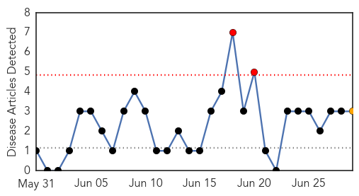
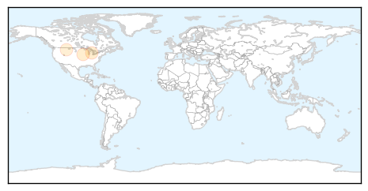
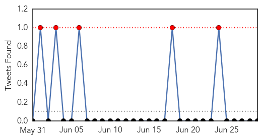

West Nile Virus
30-Day Web Trend
2 alerts, 1 warnings

30-Day Twitter Trend
0 alerts, 0 warnings

Article Locations
Article Confidences
Top Articles:
Top Tweets:
-
No tweets found for Jun 29, 2014
Cholera
30-Day Web Trend
0 alerts, 0 warnings
30-Day Twitter Trend
5 alerts, 0 warnings

Article Locations
Article Confidences
Top Articles:
Top Tweets:
-
No tweets found for Jun 29, 2014